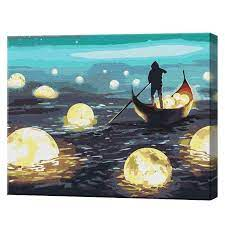
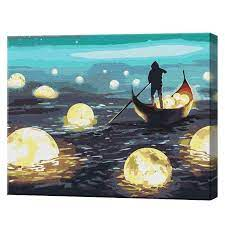

Activitatile practicate
Pentru mine activitațile școlare au un rol decisiv in formarea mea ca persoană,fie că practici sportul sau lecții suplimentare.
Pentru ca să mă dezvolt am găsit o practică ce te poate ajuta să te relaxezi de lecții și anume pictura- arta creativă de a da frîu imaginației.
| Activitati | |
|---|---|
| Ateliere de pictura | Informatii |
| Atelerele de pictura la o vîrstă fragedă ajută copilul să - și dezvolte imaginația,iar uneori datorită practicării picturii copilul își poate găsi pe viitor o muncă legat cu acest domeniu. | |
| Cursuri de limbi străine | Informatii |
| Cunoașterea limbilor străine te va ajuta la abilitatea de a comunica cu prieteni din alte țări , dar cel mai important îți vei putea găsi un loc de muncă bine plătit sau să studiezi la o universitate de peste hotare. | |
| Cursuri de dicție | Informatii |
| Știm foarte bine că modul în care vorbim ne poate dezvălui caracterul de aceea ar fi bine să vorbim corect și fluent,dreoarece în price discurs al oamenilor de succes găsim o manieră plăcută de a atrage priviri cînd aceștia vorbesc. |
Beneficiile picturii
- Te ajută să te relaxezi după o zi lungă de învățat
- Îți crește nivelul de creativitate
- Poți participa la concursuri internaționale de pictură
- Pictura te poate ajuta în caz că vrei să devii un designer sau un arhitect.
- S-a dovedit științific că pictura reduce starea de depresie sau anxietate.
 

Cea mai renumită operă de artă din istorie
Gioconda (în italiană La Gioconda) sau Mona Lisa este o pictură celebră a lui Leonardo da Vinci, realizată în anii 1503-1506, reprezentând o femeie cu expresie gânditoare și un surâs abia schițat. Mona este prescurtarea cuvântului Madonna (Doamna). Este considerată cea mai renumită operă din istoria picturii. Puține alte tablouri au fost atât de mult reproduse sau discutate. În prezent tabloul este expus la Muzeul Luvru din Paris, fiind atracția principală pentru orice vizitator.Este vorba de o pictură în ulei pe lemn de plop cu dimensiunea de 77 x 53 cm. Natura imaginii redate a făcut subiectul a nenumărate interpretări. În general, se poate spune că vivacitatea și ambiguitatea fizionomiei Giocondei se datorează procedeului de pictură „sfumato”, dând tabloului un aer misterios. Caracteristica principală a portretului este surâsul enigmatic. Sigmund Freud a interpretat acest surâs ca simbol al atracției erotice a lui Leonardo față de mama sa (Complex Oedip). Identitatea personajului portretizat nu este încă sigură, deși recent cercetătorul Giuseppe Pallanti din Florența tinde să confirme afirmația lui Giorgio Vasari, după care ar fi vorba de Monna Lisa Gherardini, membră a micii nobilimi rurale din Toscana. Cercetări anterioare ajunseseră la concluzia că portretul ar reda figura unei înstărite doamne florentine, Madonna Lisa del Giocondo, al cărei nume ar explica și a doua denumire a tabloului.
Pictura reprezintă unul din primele portrete pe fondul unui peisaj imaginar. O caracteristică interesantă este că fundalul nu este uniform, partea din stânga este evident la un nivel mai jos decât în dreapta, fiind probabil adăugată mai târziu în cursul realizării compoziției. Tabloul a fost restaurat în mai multe rânduri. Analizele cu raze Röntgen au revelat încă trei straturi de pictură sub cel vizibil.